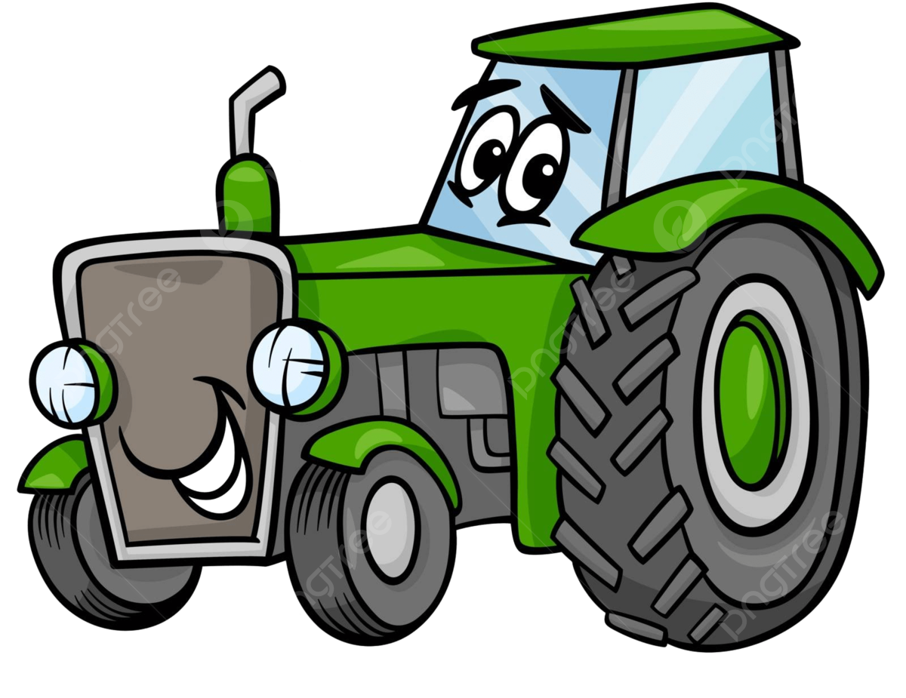
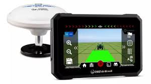

Festejando a conexão campo cidade

Qual a importancia da conexão do campo e da cidade?
A conexão entre campo e cidade é fundamental para o funcionamento equilibrado da sociedade, promovendo desenvolvimento econômico, social e sustentável. Essa relação envolve uma interdependência mútua, na qual cada espaço supre necessidades essenciais do outro.


Pontos principais
O campo é responsável pela produção de alimentos e matérias-primas que abastecem as cidades. Sem essa produção, não haveria oferta adequada de alimentos e recursos para a população urbana.
As cidades, por sua vez, oferecem mercado consumidor para os produtos do campo, além de fornecerem bens industrializados, tecnologia, serviços de saúde, educação e entretenimento, que não são produzidos no meio rural.
Essa troca garante renda para agricultores e pecuaristas e, ao mesmo tempo, atende às demandas da população urbana, promovendo o bem-estar e a qualidade de vida em ambos os ambientes.
A logística e o transporte são fundamentais para que os produtos do campo cheguem frescos e em boas condições às cidades, evidenciando a necessidade de infraestrutura e planejamento integrado.

Qual a origem do GPS?
Sistema de navegação desenvolvido pelos estadunidenses por meio do Departamento de Defesa dos Estados Unidos para uso exclusivamente militar, o Navstar GPS surgiu no início da década de 1970, em um contexto de Guerra Fria entre os Estados Unidos e a extinta União Soviética.

Fim!
https://www.agribusnavi.com.br/